Saga Nacidos de la Bruma
Saga El Archivo
de las tormentas
Otros libros de fantasía
- 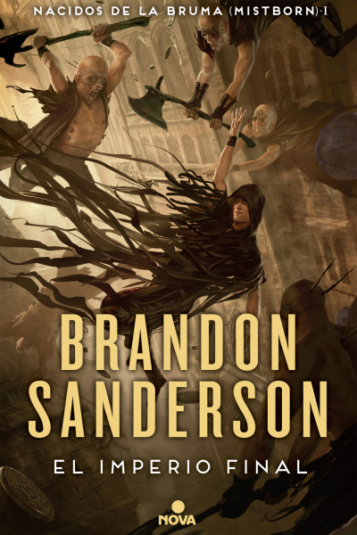
- 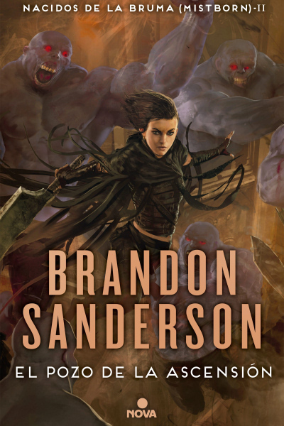
- 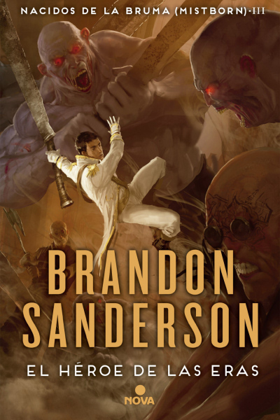
- 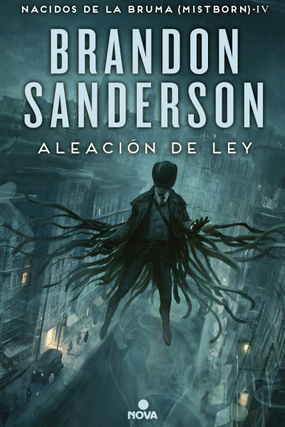
- 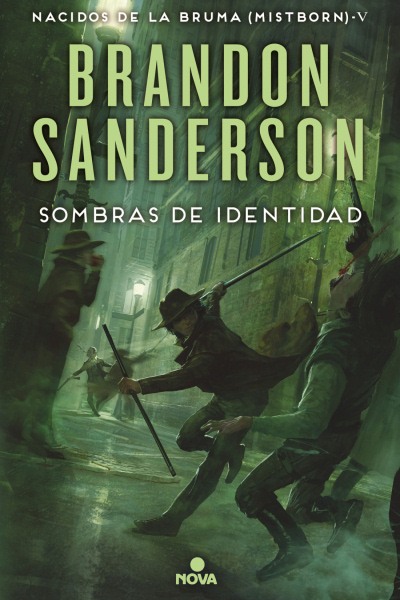
- 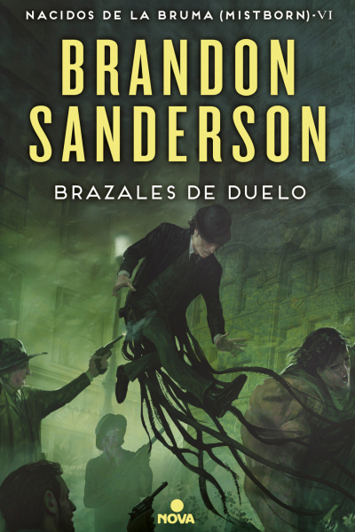
- 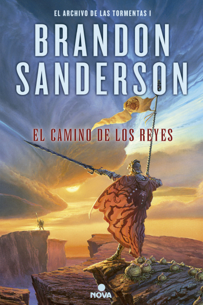
- 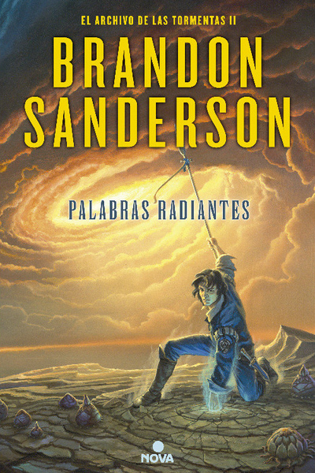
- 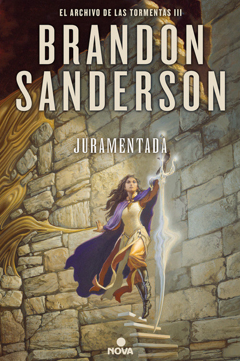
- 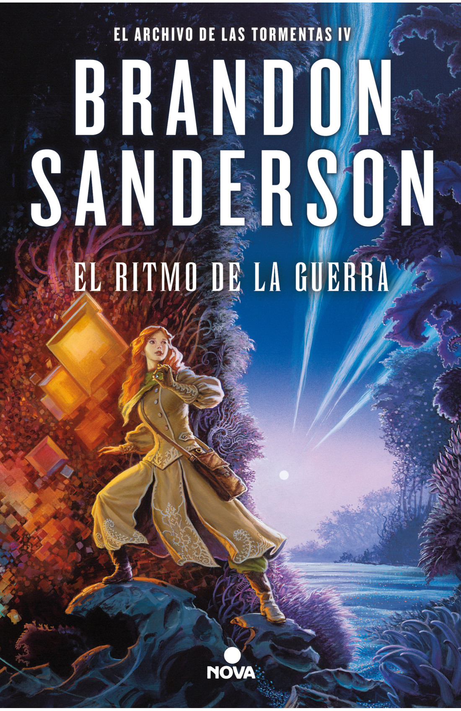
- 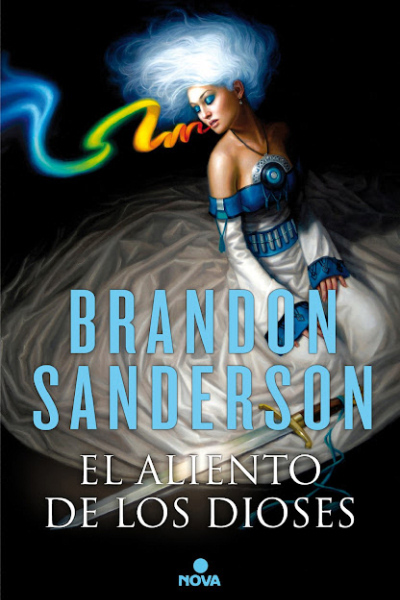
- 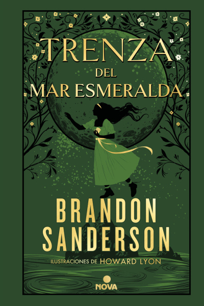
- 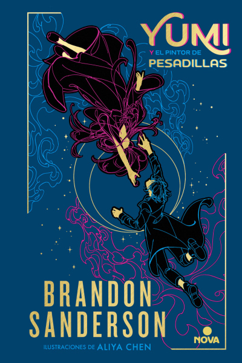
- 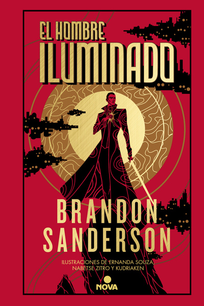
- 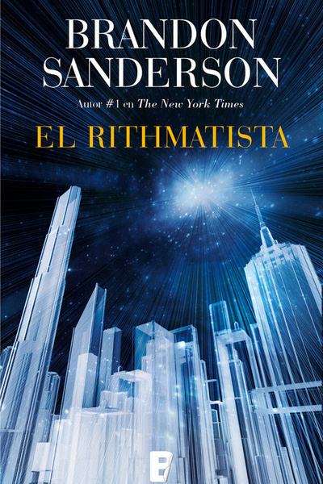
Durante mil años han caído las cenizas y nada florece. Durante mil años los skaa han sido esclavizados y viven sumidos en un miedo inevitable. Durante mil años el Lord Legislador reina con un poder absoluto gracias al terror, a sus poderes e inmortalidad. Le ayudan «obligadores» e «inquisidores», junto a la poderosa magia de la «alomancia». Pero los nobles, con frecuencia, han tenido trato sexual con jóvenes skaa y, aunque la ley lo prohíbe, algunos de sus bastardos han sobrevivido y heredado los poderes alománticos: son los «nacidos de la bruma» (mistborns). Ahora, Kelsier, el «superviviente», el único que ha logrado huir de los Pozos de Hathsin, ha encontrado a Vin, una pobre chica skaa con mucha suerte... Tal vez los dos unidos a la rebelión que los skaa intentan desde hace mil años puedan cambiar el mundo y la atroz dominación del Lord Legislador.
El Pozo de la Ascensión es el segundo volumen de la saga «Nacidos de la Bruma [Mistborn]», una obra iniciada con El imperio final y parte imprescindible del Cosmere, el universo destinado a dar forma a la serie más extensa y fascinante jamás escrita en el ámbito de la fantasía épica.
Durante los últimos mil años, han caído las cenizas y nada florece. Durante mil años, los skaa han sido esclavizados y han vivido sumidos en un miedo inevitable. Durante mil años, el Lord Legislador ha reinado con un poder absoluto gracias al terror y a la omnipresente magia de la "alomancia". Kelsier, el "Superviviente", el único que logró huir de los Pozos de Hathsin, encontró a Vin, una pobre chica skaa con mucha suerte. Los dos unidos a la rebelión que los skaa intentaban desde hace mil años vencieron al Lord Legislador. Pero matar a éste fue la parte sencilla. El verdadero desafío será sobrevivir a las consecuencias de su caída. En El héroe de las Eras se comprende el porqué de la niebla y las cenizas, la justificación de las tenebrosas acciones del Lord Legislador y la naturaleza del Pozo de la Ascensión. Todo resulta atado -y bien atado- cuando Vin y el Rey Elend buscan los últimos escondites de recursos del Lord Legislador y descubren el peligro que acecha a la humanidad. Podrán detenerlo a tiempo? Tras el gran éxito mundial de Elantris, Sanderson logra repetir la hazaña. La trilogía Nacidos de la bruma es una excepcional muestra de una nueva fantasía épica con magia, leyenda y todo tipo de misterios.
Aleación de ley es la secuela de la primera trilogía de la saga «Nacidos de la Bruma [Mistborn]», una obra iniciada con El imperio final y parte imprescindible del Cosmere, el universo destinado a dar forma a la serie más extensa y fascinante jamás escrita en el ámbito de la fantasía épica.
En Sombras de identidad el autor muestra cómo ha ido evolucionando el mundo a medida que la tecnología se mezcla con la magia, la economía crece, la democracia se sostiene con la corrupción, y la religión se convierte en una fuerza cultural en crecimiento, con cuatro de ellas que compiten por la conversión. Esta sociedad optimista pero todavía inestable, se enfrenta a su primer caso de terrorismo, delitos que avivan el odio y el conflicto laboral con el conflicto religioso. Wax y Wayne, con la ayuda de su estimado y brillante Marasi, deben desentrañar una conspiración antes de que la lucha civil encuentre las pistas.
Brazales de Duelo es el sexto libro de la saga «Nacidos de la Bruma [Mistborn]», una obra iniciada con El imperio final y parte imprescindible del Cosmere, el universo destinado a convertirse en la serie más extensa y fascinante jamás escrita en el ámbito de la fantasía épica.
El camino de los reyes es el primer volumen de «El Archivo de las Tormentas», el resultado de más de una década de construcción y escritura de universos, convertido en una obra maestra de la fantasía contemporánea en diez volúmenes. Con ella, Brandon Sanderson se postula como el autor del género que más lectores está ganando en todo el mundo.
La aclamada continuación de El camino de los reyes es, como el primer volumen de «El Archivo de las Tormentas», el resultado de más de una década de construcción y escritura de universos, convertida en una obra maestra de la fantasía contemporánea en diez volúmenes. Brandon Sanderson se postula con ella como el autor del género que más lectores está ganando en todo el mundo.
Juramentada es la aclamada continuación de El camino de los reyes y de Palabras radiantes , y tercera parte de la decalogía «El Archivo de las Tormentas», obra maestra de la fantasía épica que ha coronado la lista de best sellers de The New York Times y ha postulado a Sanderson como el autor de género que más lectores está ganando en todo el mundo.
La esperada continuación de Juramentada. Brandon Sanderson, en la cima de su carrera. Tras forjar una coalición de resistencia humana contra la invasión enemiga, Dalinar Kholin y sus Caballeros Radiantes llevan un año librando una guerra prolongada y brutal. Ningún bando ha logrado obtener ventaja.
Hace años, el monarca de Idris firmó un tratado con el reino de Hallandren según el cual el rey Dedelin enviaría a su hija mayor, Vivenna, para casarse con Susebron, el rey-dios de Hallabdren. Vivenna ha sido adiestrada durante toda su vida para ser una novia adecuada para Susebron y así cumplir con su deber y ayudar a forjar una paz estable entre los dos reinos. Ese era el plan, pero el monarca de Idris envía a su hija Siri, desobediente e independiente, en lugar de Vivenna.
En su isla natal sobre un océano verde esmeralda, la única vida que Trenza conoce es sencilla, marcada por el placer de coleccionar las tazas que traen los marineros de tierras lejanas y escuchar las historias que le cuenta su amigo Charlie. Pero cuando el padre de Charlie se lo lleva en barco para buscarle esposa y sucede una catástrofe, Trenza deberá colarse como polizona en un barco y partir en busca de la hechicera que habita en el mortífero mar de Medianoche. Sobre unos océanos de esporas repletos de piratas, ¿podrá Trenza abandonar su tranquila vida y crearse un lugar en un océano donde una sola gota puede significar la muerte instantánea?
Yumi viene de una tierra de jardines, meditación y espíritus, mientras que Pintor vive en un mundo de oscuridad, tecnología y pesadillas. Cuando de pronto sus vidas se ven extrañamente entrelazadas, ¿podrán dejar de lado sus diferencias y colaborar para descubrir los misterios de su situación y salvar sus respectivas comunidades de un desastre seguro?
Hace años tenía compañeros de armas y una causa en la que creer, pero ahora el hombre que se hace llamar Nómada solo conoce la vida a la fuga. Obligado a saltar de un mundo a otro en el Cosmere cada vez que la implacable Brigada Nocturna le gana demasiado terreno, Nómada acaba en un nuevo planeta y de inmediato se ve implicado en la trifulca entre un tirano y los rebeldes que solo pretenden evitar que los conviertan en esclavos sin mente. Y todo bajo la amenaza constante de un amanecer cuyo calor derrite la misma piedra. Incapaz de comprender su idioma, ¿sabrá navegar el conflicto y obtener el suficiente poder para saltar fuera del planeta antes de que su mente o su cuerpo paguen el precio definitivo?
Joel quiere ser un Ritmatista y tener el poder de infundir vida a figuras bidimensionales conocidas como los Chalklings. Los Ritmatistas son la única defensa de la humanidad contra los salvajes Chalklings, que ahora son una amenazan para todas las islas americanas. Como hijo de un humilde chalkmaker en la Academia Armedius, Joel sólo puede ver como los estudiantes Ritmatistas aprenden el arte mágico y él haría cualquier cosa para practicarlo. Luego los estudiantes comienzan a desaparecer: secuestrados de sus habitaciones por la noche, dejando rastros de sangre. Asignado para ayudar al profesor que investiga los crímenes, Joel y su amigo Melody se encuentran tras la pista de un descubrimiento inesperado, que cambiará los Ritmaticos y su mundo para siempre.